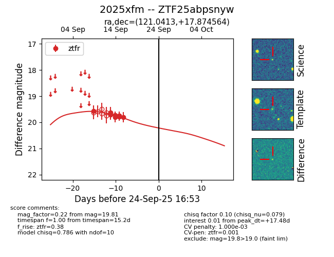
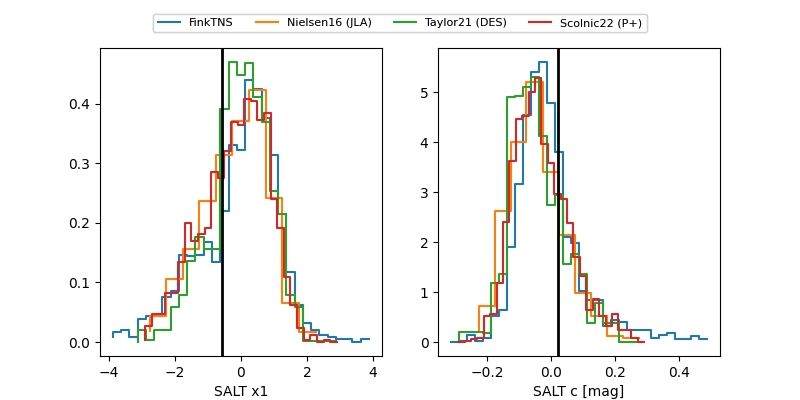

FINK: ZTF25abpsnyw
Lasair: ZTF25abpsnyw
ALeRCE: ZTF25abpsnyw
TNS: 2025xfm
YSE: 2025xfm
ZTF25abpsnyw (ztf,fink)
2025xfm (tns,yse)
equatorial (ra, dec) = (121.0413,+17.87456)
galactic (l, b) = (204.2697,+23.84465)


last ztfr=19.81
9 ztfr detections